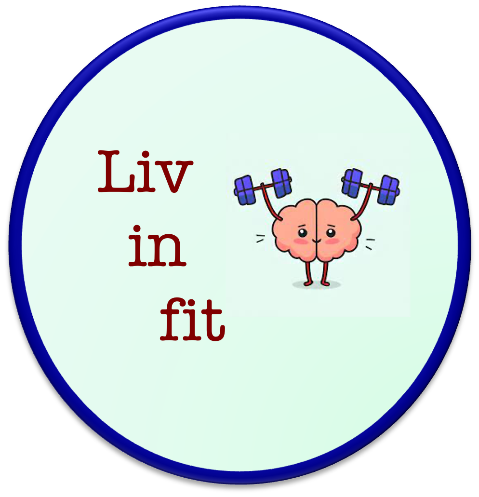
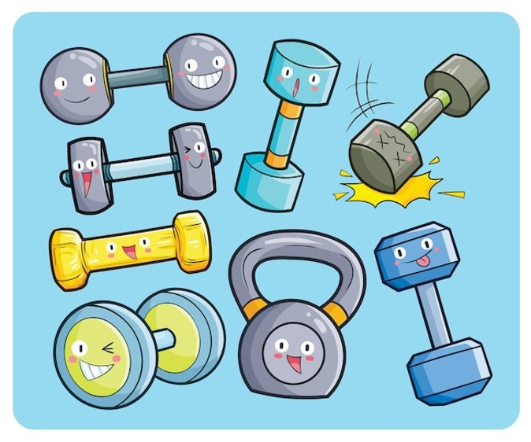

Self-care is an important part of my life, and working out is in its foundation.
I have been working out in a gym since 2011 (17 years old) and only stopped during the pandemic.

In a new country, I started going to new classes at the Student Life Center of the University of Utah.
High fitness and bodypump are my favorites fitness classes. In March 2024, I became a high fitness instructor myself.
For cardio, I enjoy rope jumping, elliptical, indoor cycling, and, more recently, running.
This website was created to host some of my workout resources and access the content easily.
Each tab lists videos targeting certain the body parts. Also there dancing tab videos to have some fun while relaxing the muscles.
Have fun in fit!
Youtube playlists
PS: Note that some of the videos are in Portuguese, my mother tongue.